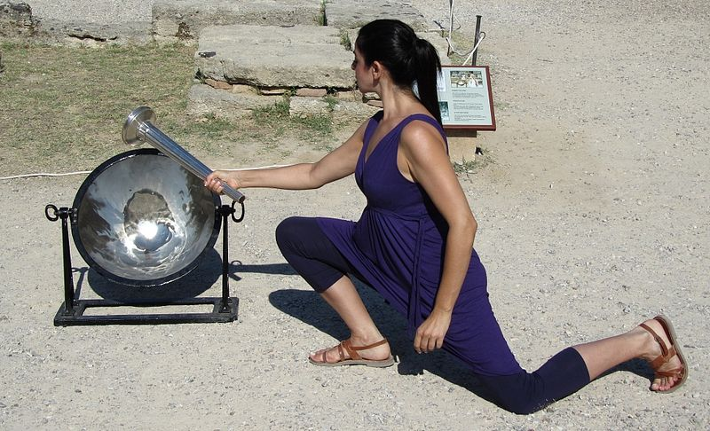
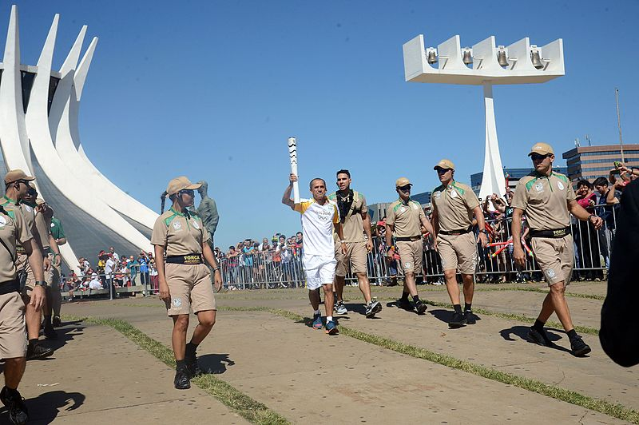

La ceremonia de encendido de la antorcha olímpica tiene lugar en Olimpia, Grecia, marcando el inicio de un viaje simbólico que atraviesa diversos países hasta llegar al estadio donde se celebrarán los Juegos. Es en este escenario emblemático donde un atleta tiene el honor de encender el pebetero durante la ceremonia inaugural, dando inicio oficial a la celebración. La llama olímpica, una vez encendida, permanece ardiendo hasta el final de los Juegos, simbolizando la energía y la pasión que animan a los atletas y espectadores durante el evento deportivo más importante del mundo.
El relevo de la antorcha olímpica es mucho más que un simple recorrido. Tiene como objetivo principal promover la unidad y la paz entre las naciones, así como difundir el espíritu olímpico y los valores que representan los Juegos. A través de su viaje, la antorcha transmite un mensaje de fraternidad entre los pueblos, resaltando la importancia del entendimiento y la cooperación internacional. La llegada de la antorcha olímpica al estadio anfitrión marca un momento de gran significado, ya que señala el comienzo oficial de los Juegos Olímpicos y simboliza la unión de atletas y países en la celebración de la excelencia deportiva y la amistad entre las naciones.

{kind=link}
Ino Menegaki, actriz griega, interpreta a la suma sacerdotisa en la ceremonia de encendido de la llama olímpica para los Juegos Olímpicos de la Juventud de Verano de 2010. La llama se enciende utilizando los rayos del sol reflejados en un espejo parabólico, simbolizando el mito griego del robo del fuego por parte de Prometeo.

Foto de Agencia Brasil disponible en Wikimedia Commons
{kind=link}
El exmaratonista Vanderlei Cordeiro de Lima lleva la antorcha olímpica en la Catedral de Brasilia. Juegos Olímpicos de Río de Janeiro 2016